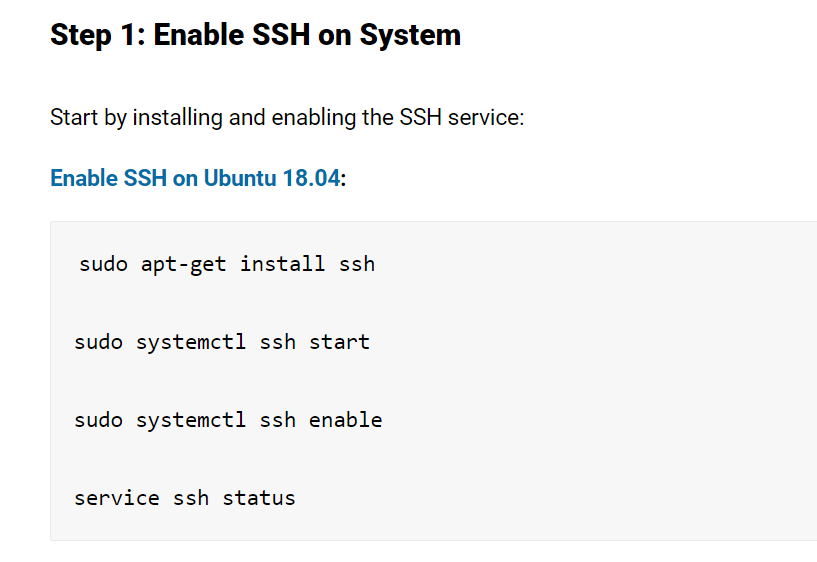

What is Linux

Linux is a ‘can do’ platform
For those that are concerned about getting their work done with Linux, let’s take into consideration how the average user works with a computer and how Linux can meet those needs. For the average user, a computer is a means to:
- Interact on social media
- Read email
- Listen to music
- Watch Youtube or Netflix
- Occasionally write something
Linux lets you customize and share
There are basically two different types of software: Proprietary and open source. With proprietary software, the code used to create the application (or operating system) is not available for public usage or viewing. Open source, on the other hand, makes the code used to create the software freely available. While the average user might not be concerned with the option to make alterations to their OS, this functionality of Linux helps to explain why this operating system doesn’t cost you anything. Linux is an open source platform, meaning that the code is available for anyone to download, change, and even redistribute. Because of this, you could download the source code for the various elements that make up a Linux distribution, change them, and create your very own distribution.
A Linux system running Docker
Method 1: Use docker exec to Run Commands in a Docker Container
Method 2: Use the docker attach Command to Connect to a Running Container
Introduction Docker is a utility that lets you create a container for running applications. A Docker container is a fully-contained virtual machine. This guide will show you three methods to SSH into a Docker container and run commands. how to connect to a running docker container Prerequisites A Linux system running Docker Preconfigured containers loaded and running Access to a terminal window/command prompt (Ctrl+Alt+T or Ctrl+Alt+F2) A user account with sudo privileges Method 1: Use docker exec to Run Commands in a Docker Container The docker exec command runs a specified command within an already running container. You can use it to SSH into a Docker container by creating a bash shell (a shell where you can type commands). Start by pulling a Docker image if you haven’t already. For example, you can load Nginx: sudo docker pull nginx docker pull image in command line Then, run the image: sudo docker run ––name nginx–test –d nginx docker run image command in the linux terminal List all running containers to verify: sudo docker ps You should now see your nginx-test image loaded. docker ps command to list all running docker containers To get access and run commands in that Docker container, type the following: sudo docker exec –it nginx-test /bin/bash Now, you are logged in to the nginx-test container. Therefore, any commands you enter will perform in that container. The –i option specifies interactive, and the –t enables a terminal typing interface. run commands on a specific docker image Method 2: Use the docker attach Command to Connect to a Running Container The docker attach command links a local input, output, and error stream to a container. By default, it launches in a bash shell. To connect to a running container, enter the following:
sudo docker attach Container_Name
Once the command is executed, you will be working in the container. Any commands you run will affect the virtual Docker environment.
Method 3: Use SSH to Connect to a Docker Container
You can connect to a Docker container using SSH (Secure Shell). Normally, SSH is used to connect remotely over a network to a server. The technology works the same when connecting to a virtual Docker container on your system.
 Read More